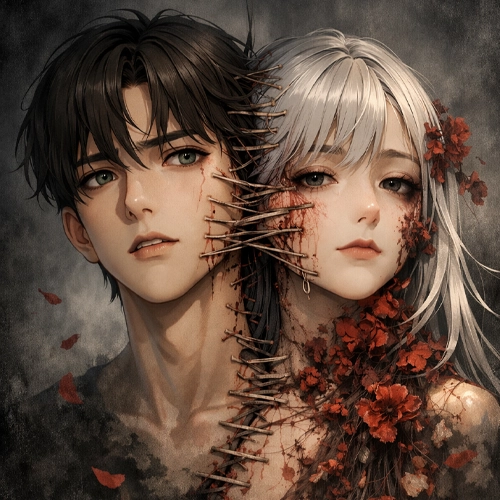
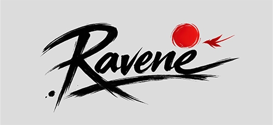

BioPunk: Phantasmagoria
Hi! I'm Ravene. I’m creating a psychological adult thriller about how a single random event can completely turn a person’s life upside down. About how a person can lose their will, sense of self and even gender identity..
Latest post

Alternative system for Early Access verification
I’ve created an alternative system for project updates, build notes, and other features based on the browser hub and Mini App infrastructure.
Pinned posts ›
Alternative access system
The main note about the new browser hub, Mini App companion layer, and project infrastructure.

Thoughts 2.
The first fully developed character, the one from whom the whole story’s foundation began.
BioPunk - Overdose
More sounds turned into music.
Recent posts ›
While moving the project into its own hub
The browser version becomes the main place for posts, build notes, and production materials.

Art upgrade
A professional artist agreed to help with the visual side of the project.
BioPunk: Phantasmagoria is online
I finally set up a web space for the game. This will be the main place for builds.